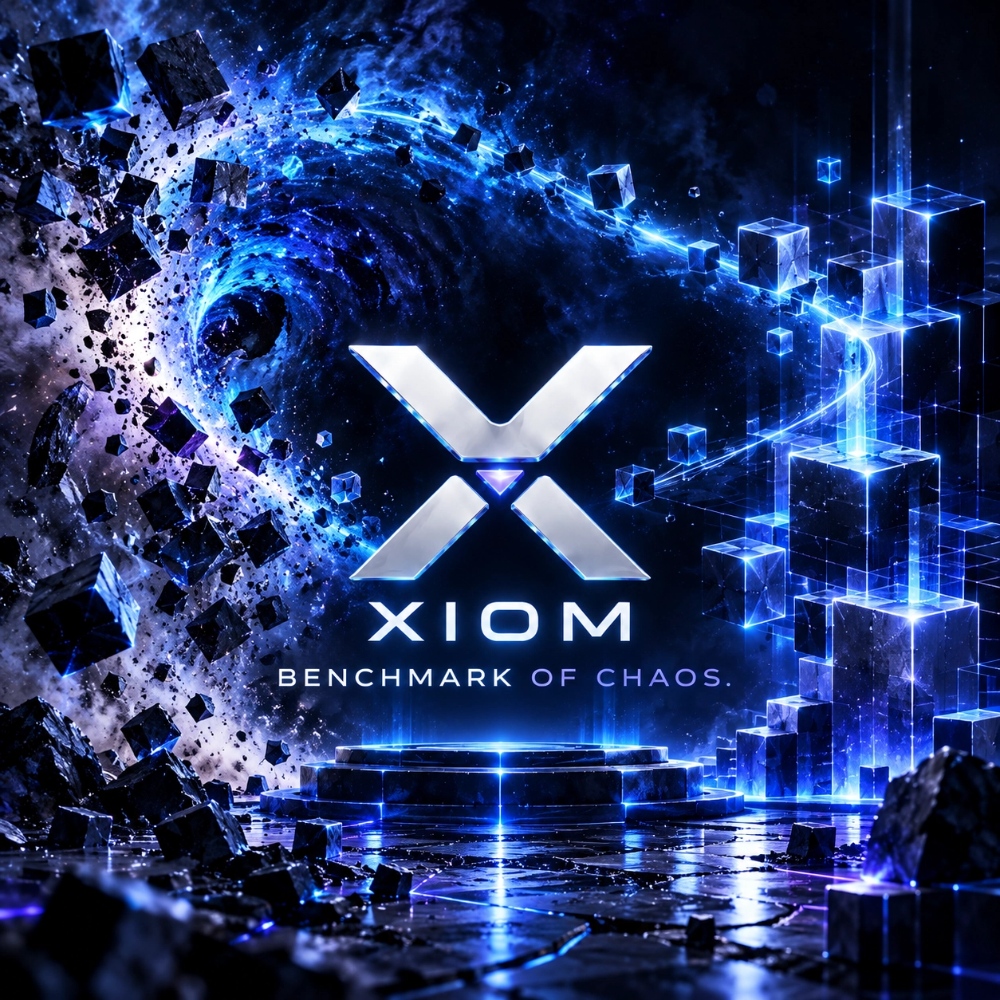

XIOM project -- offline benchmark
Benchmark of Chaos
A language-safety benchmark platform: it compares programming languages on their ability to produce safe, correct systems code, using the same LLM as the code writer. Not an LLM benchmark -- a language benchmark.
Offline by design: the benchmark runs from a local checkout, and the source and results stay offline during phase 1. This site carries the setup instructions; nothing is claimed from unpublished runs.
What it tests
| Arena | Languages | Focus |
|---|---|---|
| Systems | C, C++, Rust, Zig, Go, Ada, XIOM | Memory safety, crashes, contracts, hot reload |
| Contracts | C and C++ contracts, Rust and Prusti, Ada and SPARK, XIOM, Zig | Contract verification effectiveness |
| Scripting | Python, Node.js, Bun, Lua, XIOM (four execution modes) | Correctness, speed, throughput, startup latency |
| LLM | The same matrix, written by the model | Does AI-produced code pass each arena's tests |
How it runs
- Offline from a checkout: one Docker Compose command builds the toolchains and installs the pinned, SHA256-verified XIOM release; the dashboard opens on localhost.
- Arena profiles need no API keys; LLM profiles use keys you provide in the settings UI or an untracked environment file.
- Every result is bound to the image digest and a methodology contract version; sessions record the exact runtime and compiler version of every language, and reports warn when a selection would mix versions. Nothing is guessed.
- The fairness and methodology documents are maintained with the benchmark; disputed results are addressed there, not in marketing.
Phase 1: source and results stay offline. Setup instructions and, when they are ready, published results will appear on this site. Nothing is claimed yet -- no results have been published and the harness is still being battle-tested.